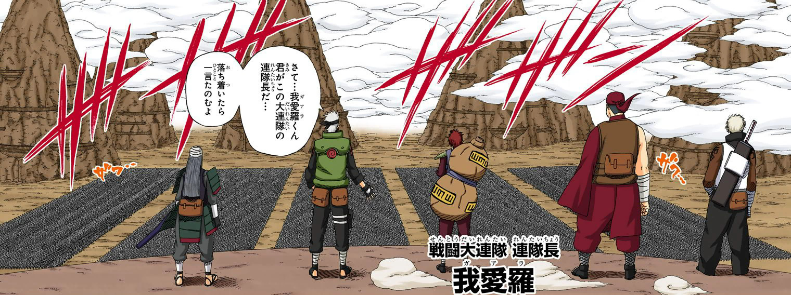
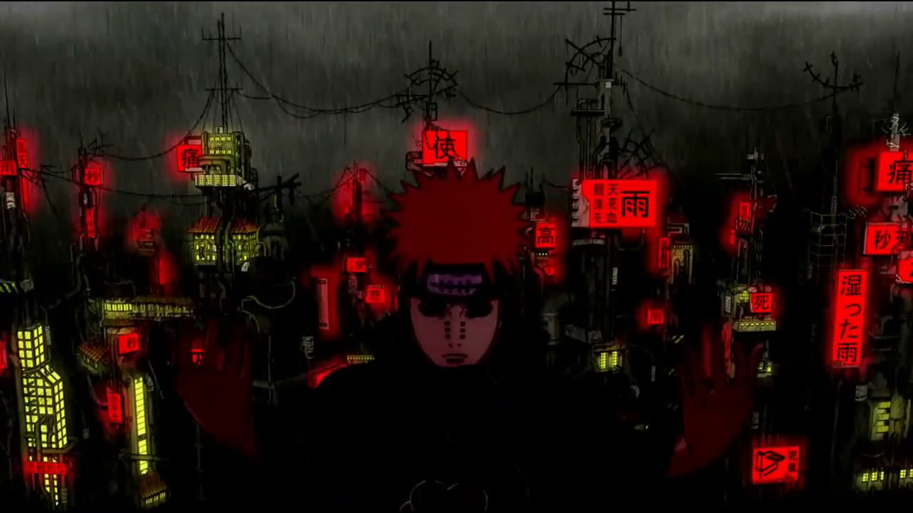

The World of Shinobi
Naruto, created by Masashi Kishimoto, is one of the most influential manga series in modern shonen history. Set in a world where ninja villages act as military powers, the story follows Naruto Uzumaki — a loud, energetic outcast who dreams of earning recognition from the very people who fear him.
The Hidden Leaf Village appears peaceful on the surface, but beneath it lies a history of war, betrayal, and political conflict among rival nations. Through Naruto’s journey as a ninja, readers are gradually introduced to the deeper structure of the shinobi world and the heavy responsibilities placed on its warriors.

Naruto Uzumaki: The Power of Determination
Naruto begins his story as a misunderstood child rejected by his community. The Nine-Tailed Fox sealed inside him caused destruction years earlier, and the villagers associate that tragedy with Naruto himself. Instead of giving in to despair, Naruto develops an unwavering determination to prove his worth.
His philosophy is simple yet powerful: never give up and never abandon the people you care about. This belief becomes the emotional backbone of the series and influences many characters throughout the story, including his rivals and enemies.
The Cycle of Hatred
One of Naruto’s central themes is the cycle of hatred that has plagued the ninja world for generations. Wars between villages create new enemies, and each generation inherits the resentment of the previous one.
Characters such as Pain, Obito, and Madara embody the consequences of this endless cycle. Their tragic pasts reveal how easily victims can become perpetrators when consumed by revenge. Naruto’s role is not merely to defeat these enemies but to understand them and break the pattern of violence.

Symbolism and Themes
Naruto uses powerful symbolism to reinforce its themes. The concept of “ninja paths” represents the personal philosophies each character follows. Naruto’s path focuses on perseverance and compassion, while other characters pursue power, revenge, or peace through domination.
Another recurring theme is the importance of bonds. Unlike many heroes who fight alone, Naruto’s strength comes from the relationships he builds with friends, mentors, and even former enemies.
The series ultimately argues that understanding and empathy are stronger than hatred, and that true leadership requires the courage to protect everyone — even those who once stood against you.
Legacy and Cultural Impact
Naruto became a global cultural phenomenon, inspiring millions of fans around the world. Its characters, iconic techniques like the Rasengan and Shadow Clone Jutsu, and emotional storytelling helped define an entire generation of anime and manga.
The series ran for over 15 years and concluded with Naruto finally achieving his dream of becoming Hokage. Its legacy continues through its sequel series and through the influence it had on modern storytelling in the shonen genre.
More than just a story about ninja battles, Naruto is ultimately a tale about resilience, forgiveness, and the power of believing in a better future.